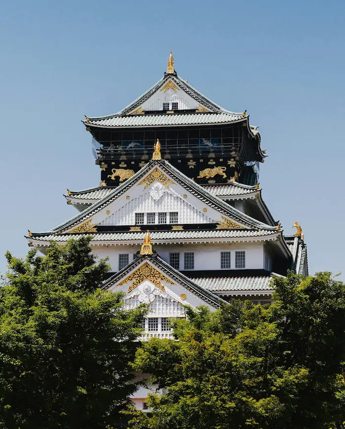
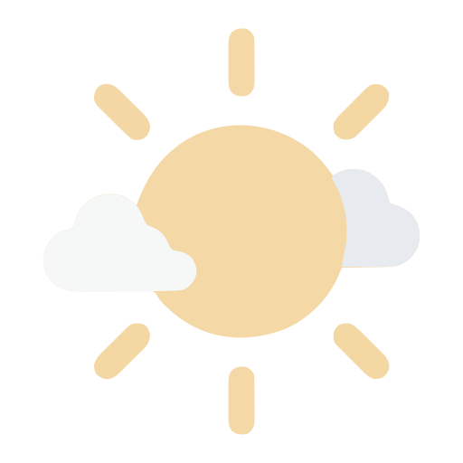

Data
Country: Japan
Population: 122.43 Million
Language: Japanese
Currency: Yen
Osaka Population: 2.75 Million
Famous for: Ancient temples, anime, cuisine, tech, and high life expectancy.
Time Zone: UTC +9
Weather

Temperature: 21°C
Conditions: Mostly Clear
Feels Like: 21°C
High / Low: 29°C / 19°C
Wind Speed: 11km/h
Humidity: 64%
Visibility: 10 km
UV Index: Low
Wind Chill: